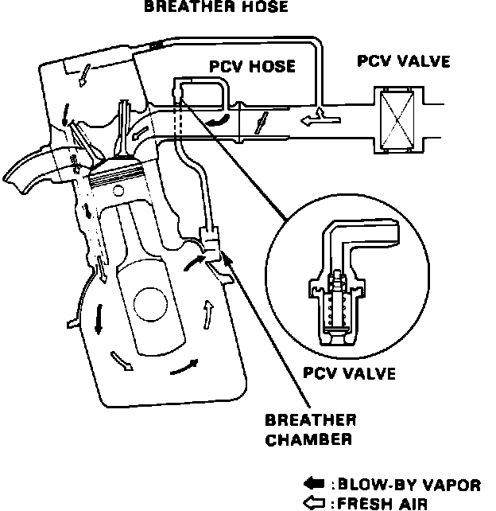

Positive Crankcase Ventilation: Description and Operation
Fig. 29 Positive Crankcase Ventilation System (PCV):

Some products of combustion escape past the piston rings. These are known as "blowby". These various gasses and contaminants are drawn into the engine by the PCV system, and burned during normal running.
The PCV valve contains a spring loaded plunger. When the engine starts, the plunger is lifted in proportion to the intake manifold vacuum and blow-by vapor is drawn directly into the intake manifold.